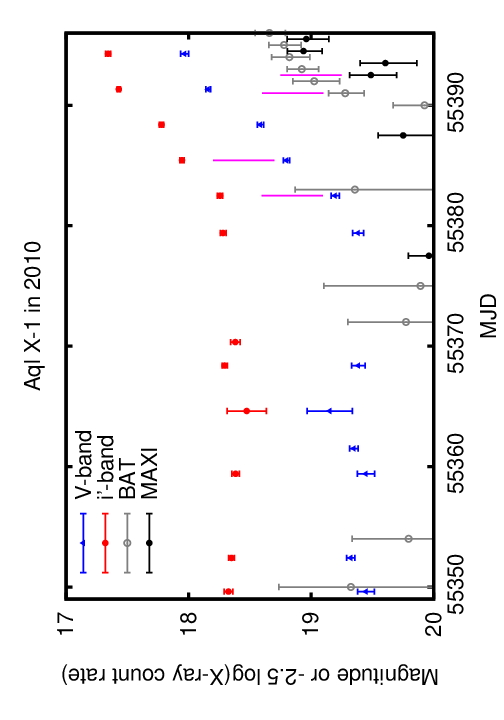
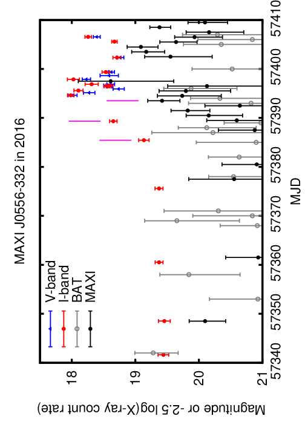
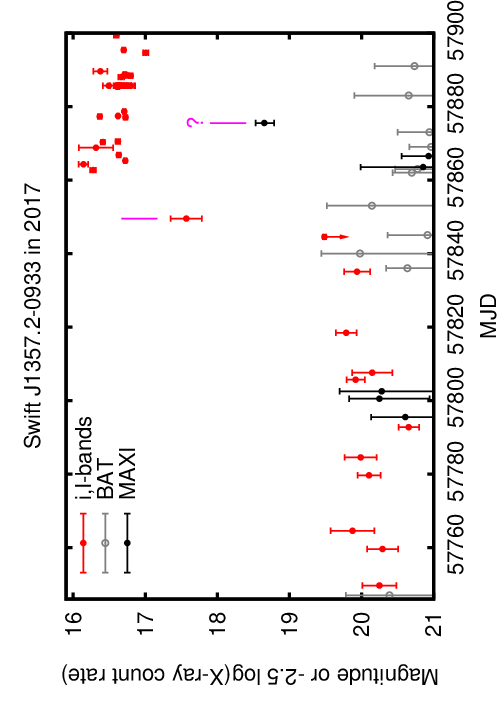
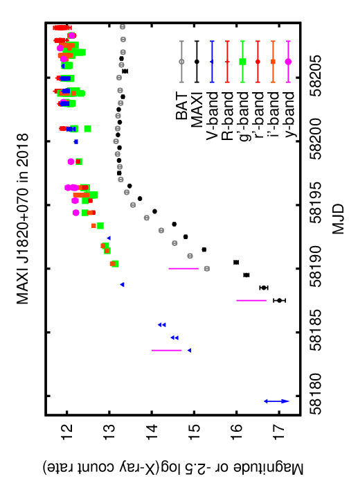

بوادر بصرية لاندلاعات ثنائيات الأشعة السينية
D.M. Russell* D.M. Bramich F. Lewis A. AlMannaei T. Al Qaissieh A. Al Qasim A. Al Yazeedi M.C. Baglio F. Bernardini N. Elgalad A. Gabuya J.P. Lasota A. Palado P. Roche H. Shivkumar S. Udrescu G. Zhang New York University Abu Dhabi, Abu Dhabi, UAE Faulkes Telescope Project, School of Physics and Astronomy, Cardiff University, Cardiff, UK Astrophysics Research Institute, Liverpool John Moores University, Liverpool, UK Al Sadeem Observatory, Abu Dhabi, UAE Mullard Space Science Laboratory, University College London, Dorking, UK INAF–Osservatorio Astronomico di Brera, Merate, Italy INAF–Osservatorio Astronomico di Roma, Roma, Italy INAF–Osservatorio Astronomico di Capodimonte, Napoli, Italy Paris-Sorbonne University Abu Dhabi, Abu Dhabi, UAE Institut d’Astrophysique de Paris, CNRS et Sorbonne Université, Paris, France 11 Nicolaus Copernicus Astronomical Center, Polish Academy of Sciences, Warsaw, Poland Yunnan Observatories, Chinese Academy of Sciences (CAS), Kunming, P.R. China Key Laboratory for the Structure and Evolution of Celestial Objects, CAS, Kunming, P.R. China Center for Astronomical Mega-Science, CAS, Beijing, P.R. China Correspondence. *D. M. Russell, New York University Abu Dhabi, PO Box 129188, Abu Dhabi, UAE. dave.russell@nyu.eduالملخص
تتنبأ نماذج عدم استقرار القرص بأنه في ثنائيات الأشعة السينية في حالة السكون ينبغي أن يحدث ازدياد في السطوع في الفيض البصري قبل اندلاع الأشعة السينية. ولا يكون تتبع تغيرات الأشعة السينية في ثنائيات الأشعة السينية الساكنة ممكناً عموماً، ولذلك يوفر الرصد البصري أفضل وسيلة لقياس تغير معدل تراكم الكتلة بين الاندلاعات، ولتحديد المراحل الأولى من الاندلاعات الجديدة. وبفضل رصدنا المنتظم باستخدام تلسكوب Faulkes/مرصد Las Cumbres (LCO)، نرصد بصورة روتينية الصعود البصري لاندلاعات جديدة في ثنائيات الأشعة السينية قبل أن ترصدها مراصد الأشعة السينية الماسحة للسماء كلها. نعرض أمثلة لاكتشاف صعود بصري في ثنائيات الأشعة السينية قبل اكتشافها بالأشعة السينية. كما نعرض رصداً بصرياً أولياً للمصدر العابر الجديد ذي الثقب الأسود MAXI J1820+070 (ASASSN-18ey) باستخدام تلسكوبات Faulkes وLCO ومرصد السديم في أبوظبي، الإمارات العربية المتحدة. وأخيراً، نقدم خط أنابيبنا الجديد لتحليل البيانات آنياً، وهو «نظام الإنذار المبكر الجديد لثنائيات الأشعة السينية (XB-NEWS)»، الذي يهدف إلى اكتشاف اندلاعات ثنائيات الأشعة السينية الجديدة والإعلان عنها خلال يوم واحد من أول اكتشاف بصري. وسيمكننا ذلك من إطلاق حملات رصد بالأشعة السينية ومتعددة الأطوال الموجية خلال المراحل المبكرة جداً من الاندلاعات، بهدف تقييد آلية إطلاق الاندلاع. الكلمات المفتاحية: الأشعة السينية: الثنائيات – التراكم، أقراص التراكم – فيزياء الثقوب السوداء – النجوم: النيوترونية1 المقدمة
تظهر المصادر السينية العابرة عندما يزداد سطوعها كثيراً، إذ ترتفع شدتها في الأشعة السينية بمعامل قد يصل إلى ∼108 (مثلاً Chen, Shrader, & Livio, 1997). وما تزال الآلية الدقيقة التي تطلق هذه الاندلاعات السينية غير مؤكدة، على الرغم من أكثر من 50 سنة من الدراسات الرصدية (للاطلاع على تسلسل زمني للاكتشافات الرئيسية، انظر Shaw & Charles, 2013). وهذه المصادر السينية العابرة هي ثنائيات أشعة سينية منخفضة الكتلة (LMXBs)، أي أنظمة ثنائية تحتوي جسماً مدمجاً، إما ثقباً أسود (BH) أو نجماً نيوترونياً (NS)، ونجماً مرافقاً منخفض الكتلة يملأ فص Roche الخاص به بحيث تسقط المادة باتجاه الجسم المدمج. في ثنائيات الأشعة السينية منخفضة الكتلة، تتدفق المادة من النجم المرافق إلى الجسم المدمج عبر قرص تراكم. غالباً ما تكون ثنائيات الأشعة السينية منخفضة الكتلة في مجرتنا خامدة، إذ تقضي سنوات إلى عقوداً في حالة سكون (خافتة، وتتغذى بمعدلات تراكم منخفضة، وبلمعانيات أشعة سينية قدرها ∼1029–1033.5 erg s−1). ولا تكتشف (في الغالب) إلا عندما تدخل في اندلاع وترصدها أقمار الرصد السيني الماسحة للسماء كلها، وهي قادرة عادة على كشف مصادر تفوق ∼1035–1036 erg s−1. وخلال هذه الفترات الأقصر من النشاط الشديد، المسماة اندلاعات، يكون الإصدار السيني أعلى بكثير (حتى ∼1038 erg s−1) وقد يقترب من حد لمعان Eddington، LEdd (مثلاً Chen et al., 1997).
في حالة السكون، يكون لمعان الأشعة السينية منخفضاً إلى درجة أن رصد هذه الأنظمة لا يتاح إلا لأكثر أقمار الأشعة السينية حساسية وحداثة، مثل Chandra وXMM-Newton وNuSTAR. وحتى عند اكتشافها، لا يكون طيف الأشعة السينية محدداً جيداً بسبب انخفاض عدد الفوتونات المرصودة، إلا أنه يمكن وصفه بقانون قوى بسيط ذي معامل فوتوني قدره ∼2 (مثلاً Plotkin et al., 2017). ينتج الإصدار السيني قرب الجسم المدمج، باتجاه نصف القطر الداخلي لقرص التراكم، حيث يكون القرص مقطوعاً. ولا يمكن كشف هذا القرص الأبرد والأخفت (مقارنة باللمعانيات الأعلى أثناء الاندلاعات) عند طاقات الأشعة السينية في حالة السكون؛ إلا أنه، بما أن مناطقه الداخلية أبرد مما تكون عليه أثناء الاندلاع، يشع غالباً عند الأطوال الموجية فوق البنفسجية (UV) والبصرية. وفي الواقع، يمكن كشف نسبة كبيرة من ثنائيات الأشعة السينية منخفضة الكتلة في السكون بسهولة عند الأطوال الموجية البصرية باستخدام تلسكوبات أرضية متوسطة الحجم، حتى وهي في حالة السكون (مثلاً Zurita, Casares, & Shahbaz, 2003). يمكن العثور على دلائل على إصدار صادر من قرص التراكم (ومن النجم المرافق) باستخدام تلسكوبات بصرية من فئة ∼ 0.4 m إلى 4 m. وبالنظر إلى حدود حساسية تلسكوبات الأشعة السينية، لا يكون اكتشاف المراحل الأولى من اندلاع جديد ممكناً عادة إلا بإجراء رصد منتظم باستخدام تلسكوبات بصرية.
2 ما الذي يسبب الاندلاعات؟
عملية التراكم هي المسؤولة عن الحرارة واللمعان الشديدين في القرص. بعض جوانب عملية التراكم مفهومة جيداً نسبياً (Frank, King, & Raine, 2002)، لكن كثيراً من الأسئلة الملحة ما زال بلا إجابة:
∙ما بنية تدفق التراكم في حالة السكون؟
∙أين، وبأي كيفية دقيقة، تطلق اندلاعات ثنائيات الأشعة السينية منخفضة الكتلة؟
∙ما الذي يسبب الاندلاعات، وما أزمنة تكرارها؟
∙هل تبدأ الاندلاعات على نحو مختلف في أنظمة الثقوب السوداء والنجوم النيوترونية؟
ينشأ الاندلاع نفسه بسبب عدم استقرار في قرص التراكم. ففي حالة السكون يمتلئ قرص بارد بالمادة إلى أن تبلغ درجة حرارته، عند نصف قطر ما، قيمة حرجة تؤين الهيدروجين وتطلق اندلاعاً. ويصف ذلك نموذج عدم الاستقرار الحراري اللزج للقرص (DIM؛ Lasota, 2001). وتنتشر جبهات التسخين عبر القرص إلى أن يصبح في حالة ساخنة وساطعة، فتبلغ لمعانيات الأشعة السينية قيماً تقترب من LEdd. ويمكن لنموذج DIM، بعد تعديله ليشمل تشعيع القرص بالأشعة السينية من المناطق الداخلية، أن يفسر على نطاق واسع دورة اندلاع ثنائيات الأشعة السينية منخفضة الكتلة (Coriat, Fender, & Dubus, 2012) بشرط أن يكون القرص الداخلي مقطوعاً أثناء السكون (Dubus, Hameury, & Lasota, 2001). ومع ذلك، لا يزال موضع وزمن عمل الآلية المسؤولة عن إطلاق اندلاع تحديداً أمراً غامضاً، بسبب نقص البيانات خلال المراحل الأولى من الصعود.
يتنبأ نموذج DIM بأنه في اندلاع ثنائية أشعة سينية منخفضة الكتلة، يطلق عدم الاستقرار عند نصف قطر ما داخل الجزء الداخلي من قرص التراكم ثم ينتشر إلى الخارج. وقد سمي ذلك اندلاعاً «من الداخل إلى الخارج» (Lasota, 2001; Ludwig & Meyer, 1998; Smak, 1984)؛ فهو لا يبدأ تماماً عند الحافة الداخلية للقرص، كما تنتشر جبهات التسخين في الاتجاهين. وفي اندلاعات المستعرات القزمة (الأقزام البيضاء المتراكمة)، كما اقترح في عدد قليل من اندلاعات ثنائيات الأشعة السينية منخفضة الكتلة، توجد عملية إطلاق بديلة، هي اندلاع «من الخارج إلى الداخل» (مثلاً Shahbaz et al., 1998; Warner, 2003). ويطلق هذا الاندلاع عدم استقرار حراري في القرص الخارجي ينشئ جبهة تسخين تنتشر إلى الداخل نحو أنصاف أقطار أصغر.
في اندلاعات كل من النمطين من الداخل إلى الخارج ومن الخارج إلى الداخل، تنتشر جبهات التسخين بسرعة αcs، حيث إن cs هي سرعة الصوت. وفي النهاية يمتلئ القرص الداخلي على المقياس الزمني اللزج، مما يؤدي إلى أشعة سينية صادرة من القرص الساخن؛ ويتنبأ ذلك بتأخر قدره عدة أيام في صعود إصدار الأشعة السينية إلى الاندلاع من القرص نسبة إلى الإصدار البصري (انظر المناقشة في Bernardini et al., 2016; Dubus et al., 2001; Hameury, Lasota, McClintock, & Narayan, 1997). غير أنه أثناء اضمحلال الاندلاعات، قرب حالة السكون، يعد القرص مقطوعاً، وتنشأ الأشعة السينية في التدفق الداخلي الساخن. وبالمقارنة مع ذلك، ليس واضحاً في أي مرحلة يمتلئ القرص أثناء صعود الاندلاع. إن حركة المادة عبر التدفق الداخلي غير الكفء إشعاعياً سريعة مقارنة بالمقاييس الزمنية اللزجة لامتلاء القرص، ولذلك، في حالة القرص المقطوع، قد نتوقع تأخراً أقصر في الأشعة السينية (أقل من بضعة أيام) إذا كانت الأشعة السينية تنشأ في هذا التدفق الداخلي. يلزم الحصول على اكتشافات بصرية وسينية في المراحل الأولى من اندلاع ثنائية أشعة سينية منخفضة الكتلة، من أجل معرفة ما إذا كانت الاندلاعات تطلق من الداخل إلى الخارج أم من الخارج إلى الداخل، وقياس الزمن اللازم (والمدى الذي يحدث فيه ذلك) لامتلاء القرص الداخلي خلال الازدياد الأولي في السطوع. ولن نفهم حقاً ما الذي يطلق هذه الاندلاعات إلا إذا أمكن اختبار ذلك على عدد من اندلاعات ثنائيات الأشعة السينية منخفضة الكتلة.
من المعروف أن اكتشاف المراحل الأولية لاندلاع جديد في ثنائية أشعة سينية منخفضة الكتلة أمر بالغ الصعوبة، بسبب الطبيعة المتقطعة لأزمنة بدايتها ونقص الرصد المنتظم. في الوقت الحاضر، ما تزال مراصد الأشعة السينية الماسحة للسماء كلها لا تمتلك الحساسية اللازمة لكشف ثنائيات الأشعة السينية منخفضة الكتلة خلال المراحل الأولى من صعودها. فالحساسيات الحدية لمراصد الأشعة السينية مثل MAXI (مرقاب صورة الأشعة السينية لكامل السماء؛ Matsuoka et al., 2009) وBAT (تلسكوب إنذار الاندلاعات) على Swift (Krimm et al., 2013) أكبر بعدة رتب مقدار من فيوض السكون لمعظم ثنائيات الأشعة السينية منخفضة الكتلة المجرية. إذا أمكن الحصول على رصد بصري وسيني معاً خلال المراحل المبكرة جداً من اندلاع، فسنكون في وضع يسمح بالإجابة عن السؤال: «أين، وبأي كيفية دقيقة، تطلق اندلاعات ثنائيات الأشعة السينية منخفضة الكتلة؟»
3 الرصد البصري لثنائيات الأشعة السينية منخفضة الكتلة
حالياً، الطريقة الوحيدة التي يمكن بها استخدام الرصد المنتظم لاكتشاف بداية اندلاعات جديدة هي التلسكوبات البصرية. إذ تلزم مرافق ذات جدولة طابورية لمراقبة المصادر باستمرار، وتوفر التلسكوبات الروبوتية أفضل تهيئة لهذا الغرض لأن الأرصاد يمكن تنفيذها عن بعد ولا تتطلب تفاعلاً بشرياً آنياً. وقد اكتشف عدد قليل من صعودات الاندلاع عند الأطوال الموجية البصرية قبل الاكتشاف بالأشعة السينية، وادعي بناء على بعضها أن الصعود البصري سبق الصعود السيني (مثلاً Bernardini et al., 2016; Buxton & Bailyn, 2004; Orosz, Remillard, Bailyn, & McClintock, 1997)، إلا أن الصعود الأولي لإصدار الأشعة السينية لم يكتشف قط لأنه كان في جميع الحالات أخفت من حد كشف أدوات الأشعة السينية خلال الازدياد الأولي في السطوع. ولم تنفذ أرصاد الأشعة السينية بسرعة كافية قط كي يرى الصعود المبكر في الأشعة السينية خروجاً من السكون.
يمكن كشف كثير من ثنائيات الأشعة السينية منخفضة الكتلة بتلسكوبات بصرية صغيرة خلال بضع دقائق فقط من زمن التعريض. لقد رصدنا ∼40 من ثنائيات الأشعة السينية منخفضة الكتلة مدة > 10 سنوات باستخدام تلسكوب Faulkes North ذي القطر 2 m (Maui, Hawaii, USA) وتلسكوب Faulkes South ذي القطر 2 m (Siding Spring, Australia)1 (Lewis, 2018). تعد تلسكوبات Faulkes2 أكبر التلسكوبات في مرصد Las Cumbres (LCO)3 ، وهو شبكة تلسكوبات روبوتية عالمية تضم أيضاً مجموعة من التلسكوبات ذات الأقطار 1 m و0.4 m موزعة على ست قارات (Brown et al., 2013). نرصد عادة كل ثنائية أشعة سينية منخفضة الكتلة مرة واحدة في الأسبوع عندما تكون مرئية (فوق الأفق ليلاً) في ثلاثة مرشحات: V وR وi′. وتتمثل الأهداف الرئيسية لحملة الرصد لدينا في توصيف تغير ثنائيات الأشعة السينية منخفضة الكتلة في حالة السكون، وجمع منحنيات ضوئية متعددة النطاقات لاندلاعات تدرج في حملات متعددة الأطوال الموجية، واكتشاف اندلاعات جديدة (Lewis, Roche, Russell, & Fender, 2008). إضافة إلى ذلك، أصبحنا في السنوات القليلة الماضية قادرين على استخدام شبكة LCO ذات القطر 1 m. وتتألف شبكة 1 m حالياً من تسعة تلسكوبات متماثلة ذات قطر 1 متر، معظمها في نصف الكرة الجنوبي، مما يجعل من الممكن إجراء رصد عالي الوتيرة للمصادر في حالة اندلاع، مثل GS 1354–64 (Koljonen et al., 2016).




نحو 30–50% من ثنائيات الأشعة السينية منخفضة الكتلة في برنامج رصدنا ساطعة بما يكفي لاكتشافها بانتظام في حالة السكون. غير أننا لم نتمكن من اكتشاف معظم الاندلاعات الجديدة فور حدوثها، لأننا لم نكن نمتلك خط أنابيب لتحليل البيانات آنياً. وقد كانت طبيعة المشكلات في البيانات وتطورها عبر السنين تتطلب عموماً فحصاً يدوياً للبيانات. لذلك لم تنشر حتى الآن إلا بيانات بعض المصادر، ولا سيما الأكثر نشاطاً عادة. وقد أدى هذا للأسف إلى تفويت عدد من ازديادات السطوع الاندلاعية، على الرغم من أن البيانات كانت قد أخذت.
عادة ما نكتشف اندلاعاً جديداً قبل أول اكتشاف له بمرقاب ماسح للسماء كلها في الأشعة السينية ببضعة أيام إلى بضعة أسابيع. ومع ذلك، لم نتمكن إلا في حالات قليلة (مثلاً Al Qasim et al., 2017; Lewis, Linares, Russell, Wijnands, & Roche, 2008; Lewis, Russell, & Shahbaz, 2012; Russell & Lewis, 2009) من الإبلاغ عن اكتشاف الاندلاع الجديد بهدف إطلاق أرصاد متابعة متعددة الأطوال الموجية. ومن الواضح أن حدوث ذلك بانتظام يتطلب نظاماً آلياً. واستناداً إلى اكتشاف اندلاع من رصدنا البصري باستخدام Faulkes قبل أول اكتشاف بالأشعة السينية في 15 من أصل 17 اندلاعات، نقدر أنه عند إعداد مثل هذا النظام سنكتشف الصعود البصري الأولي لنسبة ∼ 80–90% من جميع الاندلاعات الصادرة عن المصادر التي نرصدها (والتي تكون مرئية وقت الازدياد الأولي في السطوع). وسيتيح لنا تحديث منحنيات الضوء لجميع ثنائيات الأشعة السينية منخفضة الكتلة البالغ عددها ∼40 (بما في ذلك مصادر السكون التي لا نكتشفها عادة، ولكننا كنا سنكتشفها لو حدث اندلاع) تلقائياً وبصورة يومية أن نكشف المراحل المبكرة للاندلاعات عند أطوال موجية متعددة.
4 أمثلة على صعودات بصرية قبل الاكتشافات السينية
في الشكل 1 نعرض المنحنيات الضوئية البصرية واليومية لمراقبة السماء كلها بالأشعة السينية (MAXI وBAT على Swift؛ Krimm et al., 2013; Matsuoka et al., 2009) للمراحل الأولية لأربعة اندلاعات في ثنائيات الأشعة السينية منخفضة الكتلة. وتشير الأشرطة البنفسجية إلى العصور التي اكتشف فيها الصعود إلى الاندلاع أول مرة عند الأطوال الموجية البصرية والسينية (اكتشافات 3σ). وبالنسبة إلى نظامي النجوم النيوترونية Aql X–1 وMAXI J0556–332، كشف رصدنا باستخدام Faulkes الصعود البصري للاندلاعات قبل نحو أسبوع من ازدياد فيض الأشعة السينية إلى فيوض كافية لكشفها بمراصد السماء كلها (Russell & Lewis, 2016; Russell, Roche, Lewis, & Maitra, 2010; Russell, Udrescu, & Lewis, 2016). أما بالنسبة إلى ثنائية الأشعة السينية منخفضة الكتلة ذات الثقب الأسود Swift J1357.2–0933 (Russell, Al Qasim, et al., 2018)، فلم تكشف مراصد الأشعة السينية الماسحة للسماء كلها الاندلاع إطلاقاً (باستثناء نقطة MAXI واحدة بعد 26 أيام من أول اكتشاف بصري).
اكتشف المصدر السيني العابر الجديد، MAXI J1820+070 (الشكل 1؛ اللوحة اليمنى السفلى)، في مارس 2018 بواسطة MAXI (Kawamuro et al., 2018). غير أنه سرعان ما تبين أن مصدراً عابراً بصرياً جديداً، ASASSN-18ey، اكتشفه قبل ذلك بخمسة أيام المسح الآلي للسماء كلها بحثاً عن المستعرات العظمى (ASAS-SN)، كان في الحقيقة المصدر نفسه (Denisenko, 2018). وقد رصدنا هذه الثنائية الساطعة من ثنائيات الأشعة السينية منخفضة الكتلة بتلسكوبات Faulkes وشبكة LCO ذات القطر 1 m في مرشحات النطاقات g′ وr′ وi′ وy، واستخدمنا بعض البيانات الأولية لاستنتاج أن النظام يحتوي على الأرجح ثقباً أسود، لا نجماً نيوترونياً (Baglio, Russell, & Lewis, 2018). كما رصدنا MAXI J1820+070 باستخدام تلسكوب Meade LX850 بقطر 16 بوصة (41 cm) مع مرشحات Baader LRGB CCD (ذات أطوال موجية مركزية مشابهة لنطاقات g′ وV وR) في مرصد السديم4 (المالك/الشريك المؤسس Thabet Al Qaissieh، المدير/الشريك المؤسس Alejandro Palado، الفلكي المقيم Aldrin B. Gabuya)، الواقع في الوثبة الجنوبية خارج مدينة أبوظبي في الإمارات العربية المتحدة (Russell, Baglio, et al., 2018). ويمثل منحنى الضوء للمصدر MAXI J1820+070 في الشكل 1 أحد أفضل الصعودات إلى الاندلاع، من حيث كثافة أخذ العينات عند الأطوال الموجية البصرية، في ثنائية أشعة سينية منخفضة الكتلة حتى الآن (وندرج أيضاً بعض المقادير الضوئية المنشورة في ATels؛ Denisenko, 2018; Gandhi et al., 2018; Littlefield, 2018)، ويبين أن فيض الأشعة السينية بدأ يتسطح ويضمحل قليلاً قبل أن يبلغ الفيض البصري ذروته. ويوفر MAXI J1820+070 دليلاً على أننا ندخل الآن عصراً تكتشف فيه ثنائيات أشعة سينية منخفضة الكتلة لم تكن معروفة سابقاً عند الأطوال الموجية البصرية قبل الأشعة السينية. ومع ذلك، فقد فاتنا مرة أخرى الصعود الأولي من السكون، هذه المرة عند الأطوال الموجية البصرية والسينية معاً.
كان اندلاع 2015 القصير العمر في V404 Cyg ألمع اندلاع لثنائية أشعة سينية منخفضة الكتلة شوهد منذ عقود. وقد اكتشفنا الازدياد الأولي في سطوع الاندلاع من خلال رصدنا بتلسكوب Faulkes؛ إذ حدثت البادرة البصرية قبل أسبوع من اكتشاف أول توهج بالأشعة السينية (Bernardini et al., 2016). وبما أن الصعود السيني كان سريعاً جداً، فإن التأخر لمدة أسبوع يوحي بأن القرص ربما سخن قبل أن يبدأ الاندلاع السيني. ويتسق التأخر السيني مع الزمن اللازم لإعادة ملء المنطقة الداخلية، ومن ثم تحريك الحافة الداخلية للقرص إلى الداخل، بما يسمح للمادة بالوصول إلى الثقب الأسود المركزي، والتسبب أخيراً في ازدياد السطوع في الأشعة السينية. وقد ينطبق ذلك على بعض الاندلاعات الأخرى التي اكتشف فيها الصعود البصري قبل التأكيد بالأشعة السينية (الشكل 1)، لكننا لا نملك في هذه الحالات أي قيد على موعد بدء صعود الأشعة السينية من السكون. وعلى الرغم من أننا نكتشف بانتظام اندلاعات جديدة في مراحلها المبكرة، فإن السؤال «هل يرتفع الإصدار البصري حقاً قبل الإصدار السيني؟» ما يزال عصياً على الحسم بسبب نقص الاكتشافات المبكرة بالأشعة السينية.
5 تقديم XB-NEWS
من أجل تنبيه المجتمع إلى ازدياد بصري في سطوع ثنائية أشعة سينية في أسرع وقت ممكن بعد التقاطه في رصد، يلزم وجود خط أنابيب آلي ونظام تنبيه، بما يزيل الإجراءات البشرية وأزمنة الاستجابة. فمع الحصول على الصور، يتعين علينا تنزيلها يدوياً، وإجراء القياسات الفوتومترية، ثم بناء منحنيات الضوء. وهذه العملية كثيفة العمل وتعتمد على توافر شخص ينفذها في الوقت المناسب.
حصلنا مؤخراً على منحة لتمويل تطوير خط أنابيب البيانات الآلي ونظام التنبيه المبينين أعلاه. ونحن نطور حالياً نظام الإنذار المبكر الجديد لثنائيات الأشعة السينية (XB-NEWS) لتحقيق ذلك، ولمعالجة أرشيف أرصاد الرصد لدينا بطريقة منهجية. وثمة مكونان أساسيان لمثل هذا النظام. المكون الأول هو خط أنابيب بيانات يتخذ صورة خاماً وبيانات معايرة مرافقة مدخلات له، ويخرج قياساً فوتومترياً معايراً للهدف المطلوب. أما المكون الثاني فهو خط أنابيب تنبيه يحلل منحنى الضوء الكامل للهدف، بما في ذلك نقطة البيانات الجديدة، ويقرر ما إذا كان هناك سلوك شاذ. ويمكن لخط أنابيب التنبيه بعد ذلك أن يرسل رسالة آلية إلى فريق XB-NEWS.
المكون الأول من النظام مطور بالفعل إلى حد جيد نسبياً حتى أغسطس 2018. يستعلم النظام أرشيف بيانات LCO5 على فترات منتظمة (حتى مرة كل بضع دقائق) عن قائمة أهداف محددة مسبقاً. وتنزل أي بيانات علمية جديدة (خام ومختزلة) متاحة في الأرشيف للأهداف المطلوبة، بما في ذلك ملفات المعايرة الرئيسية (مثل إطارات التسطيح الرئيسية)، وتدمج في أرشيفنا المحلي. وتنفذ خطوة ضبط جودة البيانات محلياً. ويجري العمل حالياً على تحديد الاختزالات الرديئة آلياً بسبب إطارات التسطيح الرئيسية منخفضة الجودة، ثم إعادة تنفيذ مرحلة تصحيح التسطيح باستخدام إطار تسطيح رئيسي أفضل جودة قريب زمنياً من الصورة المراد معايرتها. وسيعاد قياس فيض الهدف ويلحق بمنحنى الضوء المعني. وستكون جميع منحنيات الضوء للأهداف مرئية على الإنترنت في صفحة مخصصة.
أحد الجوانب الرئيسية في خط أنابيب البيانات أنه مصمم ليكون متيناً جداً وآلياً بالكامل. وسيكون التأخر بين إتاحة الصورة في أرشيف LCO وإلحاق القياس الفوتومتري بمنحنى الضوء في حدود 1–10 دقائق، ويحدده أساساً التواتر الذي يستعلم به خط الأنابيب أرشيف LCO. ومن ثم فإن خط الأنابيب هو في جوهره خط أنابيب شبه آني. وسنجعل خط أنابيب البيانات متاحاً للعامة عبر GitHub مع توثيق كامل، لأنه يملك تطبيقاً أعم في إدارة بيانات LCO والفوتومترية. ونعتزم أيضاً إعادة اختزال جميع بياناتنا الأقدم باستخدام XB-NEWS ودمج النتائج في أرشيفنا المحلي.
لم يطور نظام التنبيه بعد. ومع ذلك، نتصور أنه في كل مرة تصل فيها نقطة بيانات فوتومترية جديدة، سيعاد تحليل منحنى الضوء المعني بحثاً عن سلوك شاذ (مثل ازدياد تدريجي في السطوع، أو اندلاع، أو خفوت، أو تغيرات لونية محتملة). وإذا اكتشف سلوك شاذ، فسينبه النظام فريق XB-NEWS، وسنكتب تنبيهاً على هيئة ATel إذا كان السلوك جديراً باهتمام متعدد الأطوال الموجية. وسيتيح ذلك أرصاد متابعة سريعة متعددة الأطوال الموجية للهدف عند الاقتضاء. ونعتزم تقصي قوة تقنيات تعلم الآلة وتسخيرها لاكتشاف الشذوذ حيثما أمكن. ونتوقع صدور أول إعلانات XB-NEWS قرب نهاية 2018، أو في بداية 2019.
عندما نكتشف اندلاعاً جديداً، سنطلق أيضاً أرصاد مرافق أخرى. فعلى سبيل المثال، ستساعد حساسية Swift، إذا أطلقت خلال 1–2 أيام من الازدياد البصري الأولي في السطوع، على إلقاء الضوء على مسألة ما إذا كان الإصدار البصري يرتفع أولاً، وما إذا كانت الاندلاعات من الداخل إلى الخارج أم من الخارج إلى الداخل، وكيف يمتلئ القرص الداخلي بالمادة خلال الصعود الأولي. وللحصول على تغطية إضافية بالأشعة السينية، لدينا اتفاقات غير رسمية لتنبيه فرق ASTROSAT (Singh et al., 2014) وHXMT (تلسكوب تعديل الأشعة السينية الصلبة؛ S. Zhang, Lu, Zhang, & Li, 2014) وNICER (مستكشف البنية الداخلية للنجوم النيوترونية؛ Gendreau, Arzoumanian, & Okajima, 2012) وINTEGRAL (المختبر الدولي لفيزياء فلك أشعة غاما؛ Winkler et al., 2003) بالاندلاعات الجديدة. وسنسعى أيضاً إلى جمع أرصاد متابعة سريعة راديوية ومليمترية وتحت حمراء بناء على الاكتشافات الجديدة، لالتقاط صعود الاندلاع عبر أطوال موجية متعددة.
إضافة إلى اكتشاف المراحل الأولية للاندلاعات الجديدة، سيتيح لنا الرصد الآني لثنائيات الأشعة السينية منخفضة الكتلة (وربما مصادر متغيرة أخرى) كشف السلوك غير المعتاد. فعلى سبيل المثال، في 2016 اكتشفنا، من خلال تحليل بيانات جديدة لنظام الثقب الأسود Swift J1753.5–0127، أنه خفت فجأة وبصورة درامية بعد اندلاع دام 11 سنة (Al Qasim, AlMannaei, Russell, & Lewis, 2016; Russell, AlMannaei, et al., 2016; G. Zhang et al., 2018). ولم يلاحظ هذا الخفوت عند أطوال موجية أخرى؛ فقد كان أخفت من أن ترصده مراصد الأشعة السينية الماسحة للسماء كلها. وفي الماضي اكتشفنا تغيرات في الحالة وتغيراً قوياً في بعض ثنائيات الأشعة السينية منخفضة الكتلة من خلال رصدنا (مثلاً Lewis, Russell, & Cadolle Bel, 2010; Lewis, Russell, Jonker, et al., 2010; Russell, Yang, et al., 2010). كما نوسع برامج الرصد لدينا إلى ما وراء ثنائيات الأشعة السينية منخفضة الكتلة، لتشمل أنظمة مثل المتغيرات الكارثية (مثلاً G. Zhang et al., 2017).
الشكر والتقدير
يقر DMR وDMB بدعم NYU Abu Dhabi Research Enhancement Fund بموجب المنحة RE124. ويقر JPL بالدعم المقدم من National Science Centre في بولندا، المنحة 2015/19/B/ST9/01099، وبمنحة من وكالة الفضاء الفرنسية CNES. وقد دعم البحث المبلغ عنه في هذه المنشورة مركز محمد بن راشد للفضاء (MBRSC)، دبي، الإمارات العربية المتحدة، بموجب رقم معرف المنحة 201701.SS.NYUAD. ومشروع تلسكوب Faulkes شريك تعليمي لمرصد Las Cumbres. وتقوم LCO بصيانة تلسكوبات Faulkes وتشغيلها. وقد استفاد هذا البحث من بيانات MAXI المقدمة من RIKEN وJAXA وفريق MAXI. ووفرت نتائج مرقاب Swift/BAT للمصادر العابرة من فريق Swift/BAT.
References
Al Qasim, A., AlMannaei, A., Russell, D. M., & Lewis, F. (2016, November), The Astronomer’s Telegram, 9739.
Al Qasim, A., AlMannaei, A., Russell, D. M., Lewis, F., Zhang, G., & Gelfand, J. D. (2017, February), The Astronomer’s Telegram, 10075.
Baglio, M. C., Russell, D. M., & Lewis, F. (2018, March), The Astronomer’s Telegram, 11418.
Bernardini, F., Russell, D. M., Shaw, A. W. et al. (2016, February), ApJL, 818, L5. doi: 10.3847/2041-8205/818/1/L5
Brown, T. M., Baliber, N., Bianco, F. B. et al. (2013, September), PASP, 125, 1031. doi: 10.1086/673168
Buxton, M. M., & Bailyn, C. D. (2004, November), ApJ, 615, 880-886. doi: 10.1086/424503
Chen, W., Shrader, C. R., & Livio, M. (1997, December), ApJ, 491, 312-338. doi: 10.1086/304921
Coriat, M., Fender, R. P., & Dubus, G. (2012, August), MNRAS, 424, 1991-2001. doi: 10.1111/j.1365-2966.2012.21339.x
Denisenko, D. (2018, March), The Astronomer’s Telegram, 11400.
Dubus, G., Hameury, J.-M., & Lasota, J.-P. (2001, July), A&A, 373, 251-271. doi: 10.1051/0004-6361:20010632
Frank, J., King, A., & Raine, D. J. (2002), Accretion Power in Astrophysics: Third Edition.
Gandhi, P., Paice, J. A., Littlefair, S. P., Dhillon, V. S., Chote, P., & Marsh, T. R. (2018, March), The Astronomer’s Telegram, 11437.
Gendreau, K. C., Arzoumanian, Z., & Okajima, T. (2012, September), The Neutron star Interior Composition ExploreR (NICER): an Explorer mission of opportunity for soft x-ray timing spectroscopy. In Space Telescopes and Instrumentation 2012: Ultraviolet to Gamma Ray Vol. 8443, p. 844313. doi: 10.1117/12.926396
Hameury, J.-M., Lasota, J.-P., McClintock, J. E., & Narayan, R. (1997, November), ApJ, 489, 234-243. doi: 10.1086/304780
Kawamuro, T., Negoro, H., Yoneyama, T. et al. (2018, March), The Astronomer’s Telegram, 11399.
Koljonen, K. I. I., Russell, D. M., Corral-Santana, J. M. et al. (2016, July), MNRAS, 460, 942-955. doi: 10.1093/mnras/stw1007
Krimm, H. A., Holland, S. T., Corbet, R. H. D. et al. (2013, November), ApJS, 209, 14. doi: 10.1088/0067-0049/209/1/14
Lasota, J.-P. (2001, June), New Astronomy Reviews, 45, 449-508. doi: 10.1016/S1387-6473(01)00112-9
Lewis, F. (2018, October), Robotic Telescope, Student Research and Education Proceedings, 1, 237-241.
Lewis, F., Linares, M., Russell, D. M., Wijnands, R., & Roche, P. (2008, September), The Astronomer’s Telegram, 1726.
Lewis, F., Roche, P., Russell, D. M., & Fender, R. P. (2008, May), Monitoring LMXBs with the Faulkes Telescopes. In R. M. Bandyopadhyay, S. Wachter, D. Gelino, et al. (Eds.), A Population Explosion: The Nature & Evolution of X-ray Binaries in Diverse Environments Vol. 1010, p. 204-206. doi: 10.1063/1.2945042
Lewis, F., Russell, D. M., & Cadolle Bel, M. (2010, February), The Astronomer’s Telegram, 2459.
Lewis, F., Russell, D. M., Jonker, P. G. et al. (2010, July), A&A, 517, A72. doi: 10.1051/0004-6361/201014382
Lewis, F., Russell, D. M., & Shahbaz, T. (2012, June), The Astronomer’s Telegram, 4162.
Littlefield, C. (2018, March), The Astronomer’s Telegram, 11421.
Ludwig, K., & Meyer, F. (1998, January), A&A, 329, 559-570.
Matsuoka, M., Kawasaki, K., Ueno, S. et al. (2009, October), PASJ, 61, 999-1010. doi: 10.1093/pasj/61.5.999
Orosz, J. A., Remillard, R. A., Bailyn, C. D., & McClintock, J. E. (1997, April), ApJL, 478, L83-L86. doi: 10.1086/310553
Plotkin, R. M., Miller-Jones, J. C. A., Gallo, E. et al. (2017, January), ApJ, 834, 104. doi: 10.3847/1538-4357/834/2/104
Russell, D. M., Al Qasim, A., Bernardini, F., Plotkin, R. M., Lewis, F., Koljonen, K. I. I., & Yang, Y.-J. (2018, January), ApJ, 852, 90. doi: 10.3847/1538-4357/aa9d8c
Russell, D. M., AlMannaei, A., Al Qasim, A., Shaw, A. W., Charles, P. A., & Lewis, F. (2016, November), The Astronomer’s Telegram, 9708.
Russell, D. M., Baglio, M. C., Bright, J. et al. (2018, April), The Astronomer’s Telegram, 11533.
Russell, D. M., & Lewis, F. (2009, March), The Astronomer’s Telegram, 1970.
Russell, D. M., & Lewis, F. (2016, January), The Astronomer’s Telegram, 8517.
Russell, D. M., Roche, P., Lewis, F., & Maitra, D. (2010, September), The Astronomer’s Telegram, 2871.
Russell, D. M., Udrescu, S.-M., & Lewis, F. (2016, March), The Astronomer’s Telegram, 8854.
Russell, D. M., Yang, Y. J., Degenaar, N. et al. (2010, November), The Astronomer’s Telegram, 2997.
Shahbaz, T., Bandyopadhyay, R. M., Charles, P. A. et al. (1998, November), MNRAS, 300, 1035-1040. doi: 10.1046/j.1365-8711.1998.01965.x
Shaw, A., & Charles, P. (2013, December), Astronomy and Geophysics, 54(6), 6.22-6.26. doi: 10.1093/astrogeo/att203
Singh, K. P., Tandon, S. N., Agrawal, P. C. et al. (2014, July), ASTROSAT mission. In Space Telescopes and Instrumentation 2014: Ultraviolet to Gamma Ray Vol. 9144, p. 91441S. doi: 10.1117/12.2062667
Smak, J. (1984), Acta Astronomica, 34, 161-189.
Warner, B. (2003), Cataclysmic Variable Stars. doi: 10.1017/CBO9780511586491
Winkler, C., Courvoisier, T. J.-L., Di Cocco, G. et al. (2003, November), A&A, 411, L1-L6. doi: 10.1051/0004-6361:20031288
Zhang, G., Bernardini, F., Russell, D. M. et al. (2018), ApJ, submitted.
Zhang, G., Gelfand, J. D., Russell, D. M. et al. (2017, August), MNRAS, 469, 4236-4248. doi: 10.1093/mnras/stx1106
Zhang, S., Lu, F. J., Zhang, S. N., & Li, T. P. (2014, July), Introduction to the hard x-ray modulation telescope. In Space Telescopes and Instrumentation 2014: Ultraviolet to Gamma Ray Vol. 9144, p. 914421. doi: 10.1117/12.2054144
Zurita, C., Casares, J., & Shahbaz, T. (2003, January), ApJ, 582, 369-381. doi: 10.1086/344534